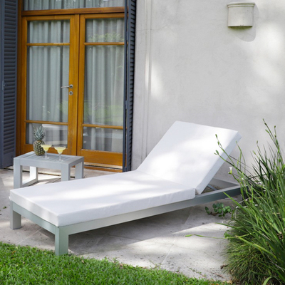

<div class="maintenance">
    <div class="maintenance_text">
        <h3><b>Mantenimiento de Coversol</b></h3>
        <p>Estos materiales no precisan ningún mantenimiento específico. Recomendamos limpiar con un trapo en seco o lavar con agua normalmente.</p>
        <p>En Rivera Designs trabajamos con materiales premium para brindar productos de la mejor calidad.
            Si bien nuestro mobiliario es libre de mantenimiento, hay algunas consideraciones para tener en cuenta.</p>
        <p>Esta tela es de fácil mantenimiento y limpieza:</p>
        <ul>
            <li>Moje la tela con agua.</li>
            <li>Utilice un cepillo suave para limpiar.</li>
            <li>Vuelva a mojar la tela con agua para quitar la suciedad.</li>
        </ul>
            <div class="maintenance_img">
        

    </div>
</div>